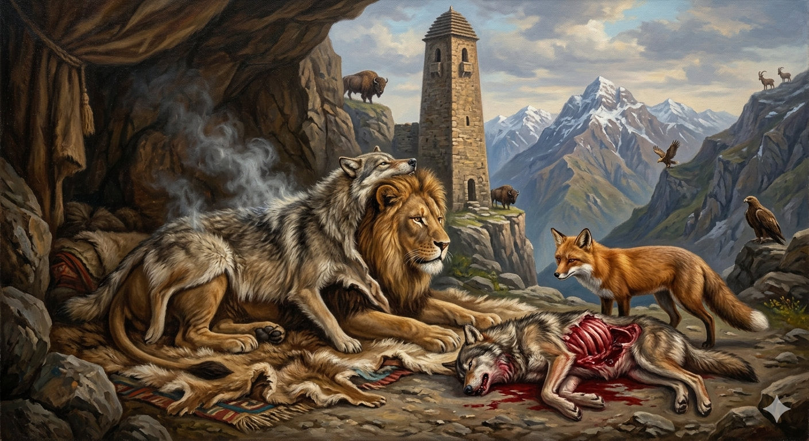

И.А. Дахкильгов. Хьехаме дувцарш - поучительные рассказы-притчи.
И.А. Дахкильгов. Хьехаме дувцарш - поучительные рассказы-притчи. Из ингушского фольклора.

Шийна тӀадоацар дийцача…
Цамогаш хинна лом метта дежад. Цамогаш хиннача ломага хьажа ухаш хиннад деррига а оакхарой. ХӀаьта цогал, ломага хьажа а ца додаш, из далар догдоахаш лелаш хиннад. Цу хӀаманна оакхал даьд берзо. Из дӀа а хайна, эггар тӀехьа цогал а дахад ломага хьажа. Ломо хаьттад цогалга: - Хьо дукха хӀана гайнад, цогал, сога хьажа ца доагӀаш, со далар догдоахаш лийнадоли хьо? - Аз мишта доахаргдар хьо даларга дог! Хьо делчама укх берзо са даккха а мича дутаргдар тхо. Со-м хьона дарба лехаш лийннад хьона. ЙӀайха йоллаш берза цӀока тӀакхеллача дарбане хургъя хьона, - аьннад цогало. ДӀатӀакхийттача ломо бордз е а йийна, хьаяьккха берза цӀока йӀайха йоллаш тӀа а кхелла, Ӏодижад. Ломо тӀера цӀока хьа а яьккха, цӀийла керчаш, яла йоаллаш, етталуш уллча берзах ший бӀарг кхийтача, цогало аьннад берзага: - Шийна тӀадоацар дийцача, иштта таӀазар хул хьона.
РУССКИЙ
Когда лезешь не в свое дело…
Больной лев слег в постель. Все звери наведывали его. Лиса же, надеясь, что вскоре лев помрет, не являлась. Волк об этом донес льву. Узнала лиса про донос и быстренько явилась ко льву. Он спросил ее: - Ты почему так долго не являлась? Уж, верно, ждала, пока я околею? - Как я могла ждать этого? Ведь если ты помрешь, то нам от волка никакого житья не будет! Я припозднилась, ища тебе лекарство для исцеления. Оказывается, ты выздоровеешь, если накинешь на себя горячую, свежеснятую волчью шкуру, - посоветовала лиса. Бросился лев на волка, пришиб его, содрал шкуру и тут же накинул на себя. Увидела лиса, как издыхающий волк корчится в своей крови и сказала ему: - Такова бывает участь тех, кто лезет не в свое дело и делает подлость другим.
ENGLISH
When you meddle in other people's affairs...
A sick lion lay down on his bed. All the other animals came to visit him. However, the fox, hoping that the lion would soon die, did not show up. The wolf told the lion about this. When the fox found out, she hurried over to the lion. The lion asked her, 'Why have you been away so long? Were you waiting for me to die? "How could I wait for that? If you die, the wolf will make our lives a living hell! I was delayed looking for a cure for you. It turns out that you'll recover if you throw a hot, freshly skinned wolf's pelt over yourself," the fox advised. The lion pounced on the wolf, killed him, skinned him and threw the pelt over himself immediately. Seeing the dying wolf writhing in his own blood, the fox said to him, 'Such is the fate of those who meddle in others' affairs and do them wrong.'
НОХЧИЙН
Шена ца догӀург дийцича…
Цомгуш хилла лом метта дижна. Цомгуш хиллачу лоьме хьажа оьхуш хилла йерриге а акхарой. ХӀета цхьогал, лоьме хьажа а ца доьдуш, иза даларна догдохуш лелаш хилла. Цу хӀуманна айкхйаьлла борз. Иза дӀа а хиъна, эххар цхьогал а дахна лоьме хьажа. Лоьмо хаьттина цхьогале: - Дукха хан йу хьо ганза, цхьогал, соьга хьажа ца догӀуш, со даларна догдохуш лелаш дари хьо? - Ас муха дохур дар хьо даларна дог! Хьо делча-м кху барзо са даккха а мича дуьтур дар тхо. Со-м хьуна дарба лоьхуш лелла хьуна. Йовха йоллуш берзан цӀока тӀекхоьллича дарбане хир йу хьуна, - аьлла цхьогало. ДӀатӀекхеттачу лоьмо борз йе а йийна, схьайаьккхин берзан цӀока йовха йоллуш тӀе а кхоьллина, охьадижна. Лоьмо тӀера цӀока схьа а йаьккхина, цӀийла керчаш, йала йоллуш, йетталуш Ӏуьллучу барзах шен бӀаьрг кхеттача, цхьогало аьлла барзе: - Шена ца догӀург дийцича, иштта таӀзар хуьлу хьуна.
ПОГОВОРКИ